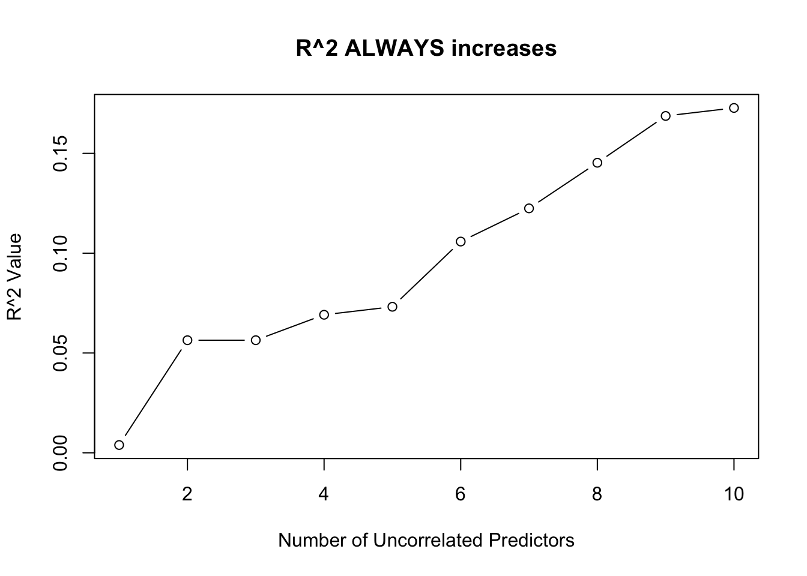
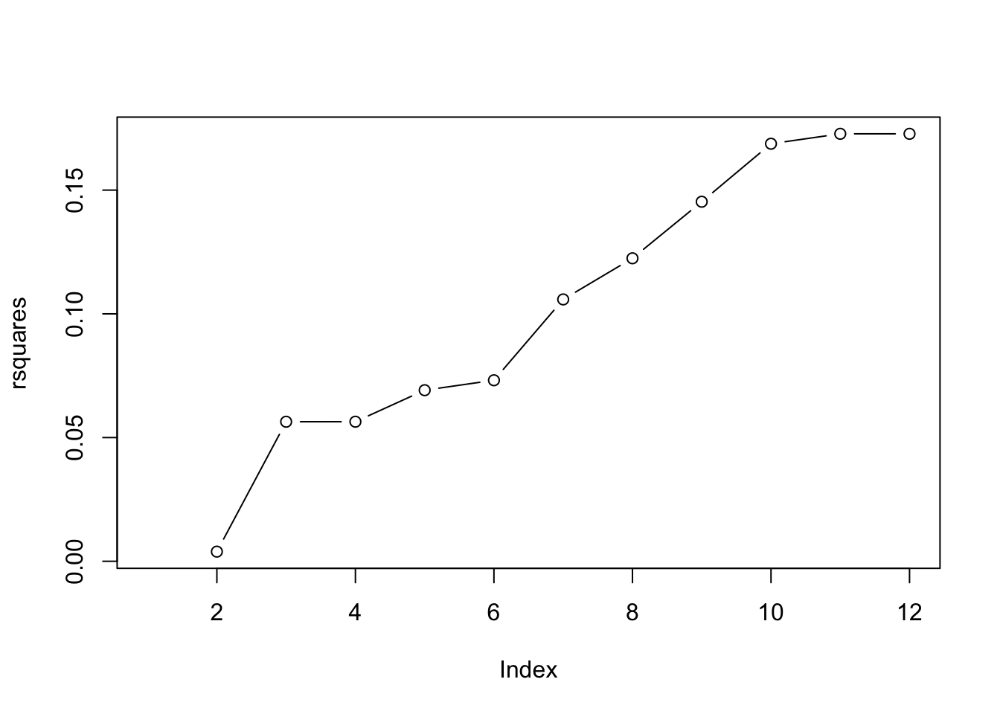
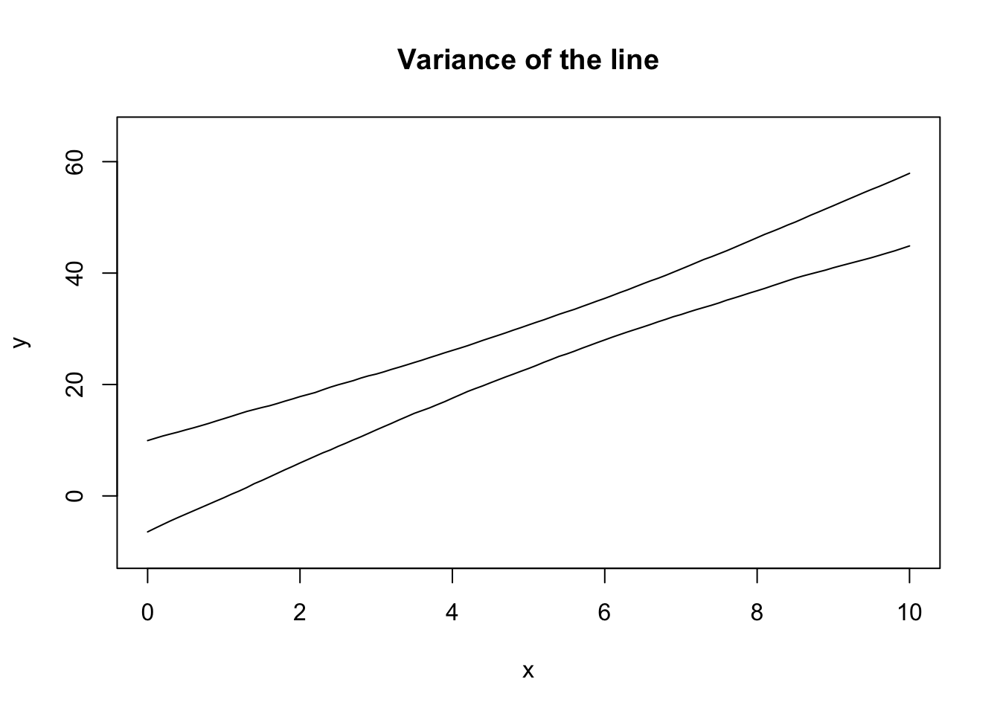
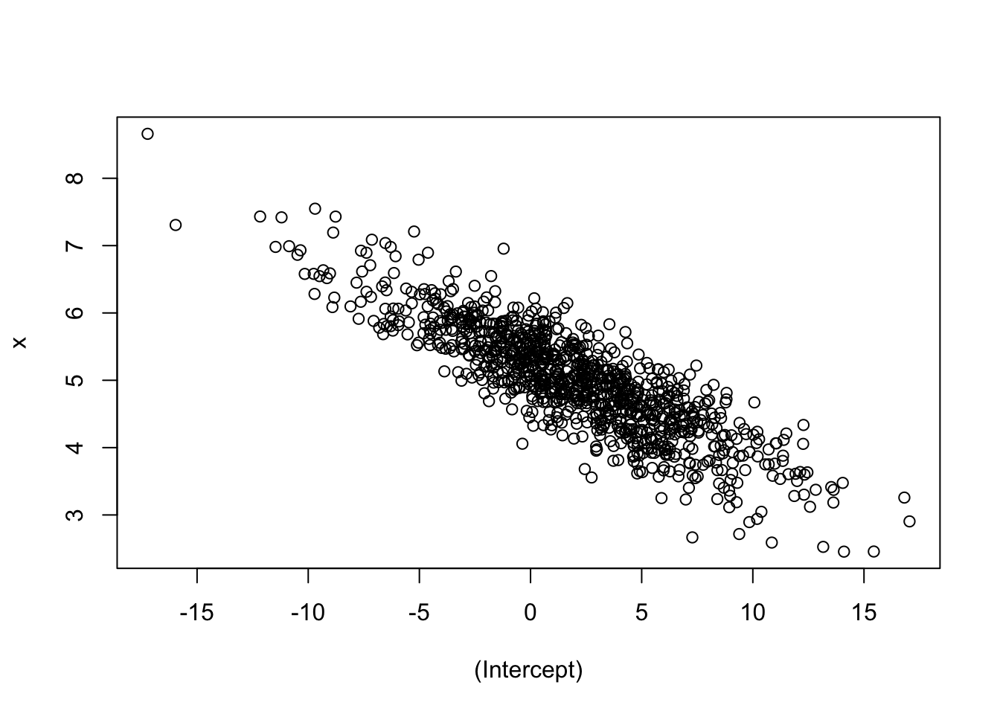

plot(mpg ~ disp, data = mtcars)
abline(lm(mpg ~ disp, data = mtcars))
plot(mpg ~ disp, data = mtcars)
abline(lm(mpg ~ disp, data = mtcars))
anova(lm(mpg ~ qsec, data = mtcars))Analysis of Variance Table
Response: mpg
Df Sum Sq Mean Sq F value Pr(>F)
qsec 1 197.39 197.392 6.3767 0.01708 *
Residuals 30 928.66 30.955
---
Signif. codes: 0 '***' 0.001 '**' 0.01 '*' 0.05 '.' 0.1 ' ' 1summary(lm(mpg ~ qsec, data = mtcars))$coef Estimate Std. Error t value Pr(>|t|)
(Intercept) -5.114038 10.0295433 -0.5098974 0.61385436
qsec 1.412125 0.5592101 2.5252133 0.01708199Notice the p-values! Also notice that the \(F\)-value is the square of the \(t\)-value! It’s like magic! Math is cool.
nx <- 10 # Number of uncorrelated predictors
uncorr <- matrix(rnorm(50*(nx + 1)),
nrow = 50, ncol = nx + 1)
## First column is y, rest are x
colnames(uncorr) <- c("y", paste0("x", 1:nx))
uncorr <- as.data.frame(uncorr)
rsquares <- NA
for (i in 2:(nx + 1)) {
rsquares <- c(rsquares,
summary(lm(y ~ ., data = uncorr[,1:i]))$r.squared)
}
plot(1:10, rsquares[-1], type = "b",
xlab = "Number of Uncorrelated Predictors",
ylab = "R^2 Value",
main = "R^2 ALWAYS increases")
The one exception is when one of the predictors is a linear combination of the previous predictors. In this case, \(R^2\) will not change!
uncorr[, nx + 2] <- uncorr[,2] + 3*uncorr[,3]
rsquares <- c(rsquares, summary(lm(y ~ ., data = uncorr))$r.squared)
rsquares [1] NA 0.03232031 0.06188019 0.06331198 0.12778471 0.12781042
[7] 0.16318838 0.18063389 0.18298318 0.25726736 0.25734273 0.25734273plot(rsquares, type = "b")
x <- runif(20, 0, 10)
b0 <- 2; b1 <- 5; sigma <- 10
b0s <- b1s <- double(1000)
plot(NA, pch = 0,
xlim = c(-2, 12), ylim = c(-10, 65),
xlab = "x", ylab = "y",
main = "Variance of the line")
abline(h = b0 + b1*mean(x))
abline(v = mean(x))
for (i in 1:1000) {
y <- b0 + b1*x + rnorm(20, 0, sigma)
abline(lm(y ~ x), col = rgb(0,0,0,0.1))
}
Let’s do that again, but record the values and only show the 89% quantiles!
x <- runif(20, 0, 10)
b0 <- 2; b1 <- 5; sigma <- 10
all_lines <- replicate(1000, {
y <- b0 + b1*x + rnorm(20, 0, sigma)
predict(lm(y ~ x), newdata = list(x = seq(0, 10, 0.1)))
})
eightnine <- apply(all_lines, 1, quantile, probs = c(0.045, 0.945))plot(NA, pch = 0,
xlim = c(0, 10), ylim = c(-10, 65),
xlab = "x", ylab = "y",
main = "Variance of the line")
lines(seq(0, 10, 0.1), eightnine[1, ])
lines(seq(0, 10, 0.1), eightnine[2, ])
Note that the theoretical calculation of these bounds is built into R:
plot(NA, pch = 0,
xlim = c(0, 10), ylim = c(-10, 65),
xlab = "x", ylab = "y",
main = "Variance of the line")
lines(seq(0, 10, 0.1), eightnine[1, ])
lines(seq(0, 10, 0.1), eightnine[2, ])
## Add the TRUE relationship
xseq <- seq(0, 10, 0.1)
lines(xseq, b0 + b1*xseq, col = 3)
## New sample from the data generating process
x <- runif(20, 0, 10)
y <- b0 + b1*x + rnorm(20, 0, sigma)
## Extract the CI
mylm <- lm(y ~ x)
xbeta <- predict(mylm, interval = "confidence",
newdata = list(x = xseq))
#lines(xseq, xbeta[,"fit"], col = 4)
lines(xseq, xbeta[,"upr"], col = 4)
lines(xseq, xbeta[,"lwr"], col = 4)
Note that the intervals won’t exactly align - the samples are going to be different each time! In 95% of the samples we collect from this data generating process, the CI we construct from the sample will contain the true (green) line. This is a basic definition for confidence intervals, but it’s neat to see it around a line.
Notice how the CI is curved. This is completely, 100% expected. Recall that \((\bar x, \bar y)\) is always a point on the line. If \(x\) is the same for all samples, then the variance in the height at \(\bar y\) is just the variance in \(y\). However, we can rotate the line around this point and still fit most of the data “pretty well”, which is where the curved nature of the line comes from!
Why did I use the same \(x\) values for all of the simulations? Because that’s part of the assumptions (this isn’t an important point to make). Again, notice how the point \((\bar x, \bar y)\) is always on the line, and how the variance at the point \(\bar x\) is minimized. If \(\bar x\) is randomly moved, then there’s extra variance in the line.
b0 <- 2; b1 <- 5; sigma <- 10
all_lines2 <- replicate(1000, {
x <- runif(20, 0, 10)
y <- b0 + b1*x + rnorm(20, 0, sigma)
predict(lm(y ~ x), newdata = list(x = seq(0, 10, 0.1)))
})
eightnine2 <- apply(all_lines2, 1, quantile, probs = c(0.045, 0.945))plot(NA, pch = 0,
xlim = c(0, 10), ylim = c(-10, 65),
xlab = "x", ylab = "y",
main = "Variance of the line")
lines(seq(0, 10, 0.1), eightnine[1, ])
lines(seq(0, 10, 0.1), eightnine[2, ])
lines(seq(0, 10, 0.1), eightnine2[1, ], col = 2)
lines(seq(0, 10, 0.1), eightnine2[2, ], col = 2)
legend("topleft", legend = c("non-random x", "random x"), col = 1:2, lty = 1)
The textbook for this course also covers models that incorporate randomness in \(X\), but this is not covered in this course.
b0 <- 2; b1 <- 5; sigma <- 10
all_params <- replicate(1000, {
x <- runif(20, 0, 10)
y <- b0 + b1*x + rnorm(20, 0, sigma)
coef(lm(y ~ x))
})plot(t(all_params))
Intuition check: were you expecting a negative slope? Does this make sense? If you increase \(\beta_0\), why would \(\beta_1\) decrease?
For homework, try a negative intercept and see what happens! What about a negative slope?
Joint normality leads to marginal normality! This means we can create a confidence interval based on the marginal. However, if the joint distribution has a strong correlation, the marginal confidence intervals might contain unlikely points!
par(mfrow = c(1, 3))
## Marginal distribution of beta_0
plot(density(all_params[1,]),
main = "Distribution of b_0",
xlab = "b_0")
abline(v = quantile(all_params[1,], c(0.055, 0.945)), col = 2)
abline(v = 8, col = 3) # Hypothesized beta_0
## Marginal distribution of beta_1
plot(density(all_params[2,]),
main = "Distribution of b_1",
xlab = "b_1")
abline(v = quantile(all_params[2,], c(0.055, 0.945)), col = 2)
abline(v = 6, col = 3) # Hypothesized beta_1
## Joint distribution
plot(t(all_params), main = "Joint Distribution",
xlab = "b_0", ylab = "b_1")
abline(v = quantile(all_params[1,], c(0.055, 0.945)), col = 2)
abline(h = quantile(all_params[2,], c(0.055, 0.945)), col = 2)
points(x = 8, y = 6, col = 3, pch = 16, cex = 1.5)
Notice how the rectangular confidence region in the joint distribution contains regions where there are no points! For example, a hypothesis test for whether \(\beta_0=8\) and \(\beta_1 = 6\) (the green lines/points) would not be rejected if we checked the two confidence intervals separately, but likely should be rejected given the joint distribution! This is exactly what happens when the F-test is significant but none of the t-tests for individual predictors is significant.
In general, the CIs for each individual \(\hat\beta\) are missing something - especially if there’s correlation in the predictors!
In these examples, we repeatedly sampled from the true relationship to obtain simulation-based confidence intervals. The normality assumption allows us to make inferences about the distribution of the parameters - including the joint distribution - from a single sample! Inference is powerful!